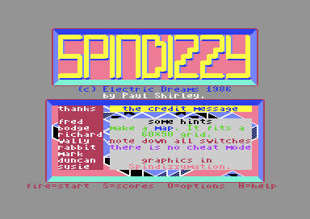
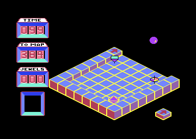
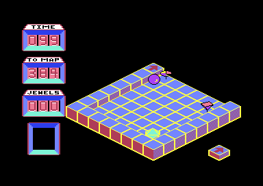

<meta charset="utf-8">
<meta name="viewport" content="width=device-width, initial-scale=1">
<title>Spindizzy</title>
<link rel="preconnect" href="https://fonts.googleapis.com">
<link rel="stylesheet" href="https://fonts.googleapis.com/css2?family=Lato:wght@400;700;900&family=IBM+Plex+Mono:wght@400;500&display=swap">
<style>
:root{
  --bg:#23262d; --paper:#e9e7e1; --surface:#ffffff; --surface-2:#f1efea; --line:#d5d3cc; --line-soft:#e0ded8;
  --ink:#2f3136; --ink-soft:#55585f; --ink-mute:#80838a;
  --link:#1f5fa8; --link-hover:#154480; --accent:#1f5fa8;
  --amber:#c25a00; --cyan:#1f5fa8; --coral:#d04a3a; --green:#2a8a4a; --violet:#4a5bd6; --hl:#fff0c2;
  --chip:#2f3136; --chip-ink:#ffffff;
  --c64blue:#40318d; --c64grey:#686868;
  --fd:'Lato',system-ui,sans-serif; --fb:'Lato',system-ui,sans-serif; --fm:'IBM Plex Mono',ui-monospace,Menlo,monospace;
  --col:1080px; --gx:68px; --fs:17px; --lh:1.6; --hw:900; --h1:46px; --h2:26px; --sy:48px; --pp:26px; --r:10px;
  --plate-shadow:0 1px 2px rgba(0,0,0,.05),0 4px 14px rgba(0,0,0,.05);
}
*{box-sizing:border-box}
html{background:var(--bg);min-height:100%}
body{background:var(--paper);color:var(--ink);font-family:var(--fb);font-size:var(--fs);line-height:var(--lh);max-width:var(--col);margin:0 auto;min-height:100vh;padding:0 0 4rem}
h1,h2,h3{font-weight:var(--hw);letter-spacing:-.01em;text-wrap:balance;color:var(--ink);margin:0}
.wrap{padding:0 var(--gx)}
.hero{padding:48px var(--gx) 8px;text-align:left}
.eyebrow{font-family:var(--fm);font-size:12px;letter-spacing:.08em;text-transform:uppercase;color:var(--ink-mute);margin:0 0 10px}
.hero h1{font-size:var(--h1);line-height:1.15;letter-spacing:-.02em;margin:0 0 14px}
.hero .sub{margin:0 0 .6em;color:var(--ink-soft)}
section{padding:var(--sy) 0 24px}
section:last-of-type{border-bottom:none}
.fig{font-family:var(--fm);font-size:12px;letter-spacing:.08em;text-transform:uppercase;color:var(--ink-mute);margin:0 0 10px}
h2.t{font-size:var(--h2);margin-bottom:12px}
.lede{color:var(--ink-soft);margin:0 0 30px}
.plate{background:var(--surface);border:1px solid var(--line);border-radius:var(--r);padding:var(--pp);box-shadow:var(--plate-shadow)}
.cap{font-size:14px;color:var(--ink-mute);margin-top:14px;line-height:1.55}
.cap b{color:var(--ink);font-weight:700}
code{font-family:var(--fm);font-size:.82em;background:var(--chip);color:var(--chip-ink);border-radius:4px;padding:2px 6px;overflow-wrap:break-word;-webkit-box-decoration-break:clone;box-decoration-break:clone}

.sp-shots{display:grid;grid-template-columns:repeat(auto-fit,minmax(240px,1fr));gap:12px}
.sp-shots figure{margin:0}
.sp-shots img{display:block;width:100%;height:auto;image-rendering:pixelated;border-radius:4px;background:#000}
.sp-shots figcaption{font-size:13px;color:var(--ink-mute);margin-top:6px}
.sp-cv{display:block;width:100%;max-width:640px;height:auto;image-rendering:pixelated;background:#000;border-radius:4px}
.sp-bar{display:flex;gap:8px;flex-wrap:wrap;align-items:center;margin:0 0 14px}
.sp-bar button{font-family:var(--fm);font-size:13px;background:var(--surface-2);border:1px solid var(--line);border-radius:6px;padding:6px 11px;cursor:pointer;color:var(--ink)}
.sp-bar button[aria-pressed="true"]{background:var(--chip);color:var(--chip-ink);border-color:var(--chip)}
.sp-tab{border-collapse:collapse;width:100%;font-size:14px;margin-top:14px}
.sp-tab th,.sp-tab td{border-bottom:1px solid var(--line-soft);padding:6px 8px;text-align:left;vertical-align:top}
.sp-tab th{font-family:var(--fm);font-size:12px;letter-spacing:.06em;text-transform:uppercase;color:var(--ink-mute);font-weight:500}
.sp-tab td.n{font-family:var(--fm);text-align:right}
.sp-tab th.n{text-align:right}
.sp-wrapx{overflow-x:auto}
.sp-bytes{font-family:var(--fm);font-size:13px;line-height:1.9;word-break:break-word}
.sp-bytes span{display:inline-block;padding:0 3px;border-radius:3px;margin:0 2px 3px 0}
.sp-k0{background:#e4e1f7}.sp-k1{background:#fde7c8}.sp-k2{background:#d7efd9}.sp-k3{background:#f6d6d2}.sp-k4{background:#d6e6f5}
.sp-note{font-size:14px;color:var(--ink-mute)}
.sp-map{display:block;max-width:100%;height:auto;cursor:pointer;background:#1b1c20;border-radius:4px}
.sp-legend{display:flex;gap:16px;flex-wrap:wrap;font-size:13px;color:var(--ink-soft);margin-top:10px}
.sp-legend i{display:inline-block;width:12px;height:12px;border-radius:2px;margin-right:6px;vertical-align:-1px}
.sp-split{display:flex;gap:22px;flex-wrap:wrap;align-items:flex-start}
.sp-split > div{flex:1;min-width:280px}
.sp-plot{display:block;width:100%;max-width:640px;height:auto;background:#fbfaf7;border:1px solid var(--line-soft);border-radius:4px}
.sp-in{font-family:var(--fm);font-size:15px;padding:6px 10px;border:1px solid var(--line);border-radius:6px;width:12em}
.sp-out{font-family:var(--fm);font-size:14px;margin-left:10px}
</style>
<!-- tabs -->
<header class="hero">
  <p class="eyebrow">Spindizzy · Discoveries</p>
  <h1>Discoveries</h1>
  <p class="sub">A password the credits say does not exist, inhabitants that break their own speed limit, a knock off the walls that never sounds, and a switch that opens nothing.</p>
</header>
<main class="wrap">

<section id="password">
  <p class="fig">01 · The password</p>
  <h2 class="t">Secret: "I LIED!" stops the clock, though the credits say there is no cheat</h2>
  <p>One of the hints on the credits screen says "there is no cheat mode". There is one. Once, as the game starts up, <code>check_cheat_password</code> (<code>$6076</code>) switches every ROM and chip out of the way and compares seven bytes of the memory hidden under the chips, at <code>$DF00</code>, with a password kept just after the routine (<code>cheat_password</code>, <code>$6098</code>): "I LIED!" in ASCII. If they match, the routine writes an RTS, the 6502's return instruction, over the first byte of <code>add_to_time</code> (<code>$9533</code>), the routine every loss of time goes through. From then on the time can only go up: rooms and jewels still add to it, up to 150.</p>
  <div class="plate">
    <label for="sp-pw" class="sp-note">The seven bytes at <code>$DF00</code>:</label>
    <div class="sp-bar" style="margin-top:8px"><input id="sp-pw" class="sp-in" maxlength="7" value="I LIED!" autocomplete="off" spellcheck="false"><span class="sp-out" id="sp-pw-out"></span></div>
    <p class="cap"><b>The game's own check</b> runs on this page on a model of the C64's processor over the listing's bytes, with what you type written into the memory at <code>$DF00</code>. The answer is what it leaves at <code>$9533</code>.</p>
  </div>
  <p>The game itself never writes to <code>$DF00</code>, and a player cannot type there: on a C64 that address belongs to the expansion port, and the memory under it can only be reached with the chips switched out. The password has to be put there before the game starts, with a cartridge or a machine-code monitor. With it in place the time stayed at 108 for 20 seconds in the start room; without it, it went from 107 to 103 in the same time. The same in play, as a poke:</p>
  <pre><code>POKE 38195,96</code></pre>
</section>

<section id="inhabitants">
  <p class="fig">02 · Inhabitants</p>
  <h2 class="t">Bug: inhabitants break their speed limit in two directions</h2>
  <p>Each of the 14 inhabitants has a top speed in the world data, from 16 to 64. Every time the pieces move, it steers 4 towards Gerald along each axis (<code>steer_speed</code>, <code>$A818</code>). Speeding up in the plus direction, the routine stops at the top speed. Speeding up in the minus direction, it takes the top speed itself from the new speed and checks whether the result is negative (CMP, then BMI), the test for the plus side. A negative speed less a positive top speed is negative, until the 8-bit result wraps round past -128 and turns positive, which happens once the speed is below -128 plus the top speed. So the speed keeps growing until then, and only then snaps back to minus the top speed and starts growing again. An inhabitant with a top speed of 16 chasing Gerald towards the minus side runs out to -112, seven times its limit.</p>
  <div class="plate">
    <div class="pick"><button type="button" class="step" data-d="-1" aria-label="The inhabitant before">‹</button><select id="sp-inh-sel" aria-label="Inhabitant"></select><button type="button" class="step" data-d="1" aria-label="The inhabitant after">›</button></div>
    <canvas id="sp-steer" class="sp-plot" width="640" height="280" aria-label="The inhabitant's speed each time it steers"></canvas>
    <p class="cap" id="sp-steer-cap"></p>
  </div>
  <p>In the first view the minus directions are the two that lead up the screen, away from the viewer. Only the three inhabitants with a top speed of 64 are held both ways, because -68 is already below -128 plus 64. In room 55, 73, an inhabitant with a top speed of 24 heading for Gerald in the minus direction went from standing to a speed of -64 in 0.6 seconds.</p>
</section>

<section id="credits">
  <p class="fig">03 · The credits</p>
  <h2 class="t">Secret: RUN/STOP on the title shows the credits and four hints</h2>
  <p>The title lists fire, S, O, and H. RUN/STOP, which it does not list, brings up a screen of its own (<code>credits_screen</code>, <code>$70F0</code>): thanks to eight people, "the credit message", and four hints. "Make a map. It fits a 60*50 grid", "note down all switches", "there is no cheat mode", and "graphics in Spindizzymation". The world does fit: its 386 rooms take up 38 rows and 39 columns of the map, which the <a href="levels.html">Map</a> tab draws.</p>
  <div class="sp-shots"><figure><figcaption>The screen RUN/STOP brings up from the title.</figcaption></figure></div>
</section>

<section id="walls">
  <p class="fig">04 · Walls</p>
  <h2 class="t">Bug: the knock off a wall never sounds</h2>
  <p>When Gerald runs into a wall, the game undoes the step and reverses and halves his speed along that axis (<code>wall_collisions</code>, <code>$9311</code>; <code>bounce_speed</code>, <code>$9421</code>). Then it calls the same noise routine a hard landing uses (<code>noise_sound</code>, <code>$88BE</code>), with half the top byte of the new speed as the pitch. That routine plays nothing below 7. The top byte is 0 at any speed Gerald can reach, so the knock is asked for at every bounce and never heard. Gerald bounced round the start room 18 times without a sound.</p>
</section>

<section id="ice">
  <p class="fig">05 · Ice</p>
  <h2 class="t">Stopping dead on ice costs 5 of the time</h2>
  <p>On ice neither friction nor the joystick works, so Gerald slides on in a straight line (<a href="index.html#physics">How it works</a>). If he ever came to a dead stop there he could never move again, so the game checks for it (<code>on_ice</code>, <code>$9116</code>): a stop on ice, unless he is on a lift, puts him back where he last stood on something solid, for 5 of the time, as a fall would. Set down on ice at rest, he was put back at once.</p>
</section>

<section id="fast">
  <p class="fig">06 · The fast speed</p>
  <h2 class="t">The fast speed runs the clock twice as fast as well</h2>
  <p>The options screen offers a slow and a fast speed. The difference is one number: how long the main loop waits at the top of each pass, 16,000 processor cycles at the slow speed and 1 at the fast (<code>new_game</code>, <code>$84D1</code>). The clock counts passes, not seconds (<a href="index.html#time">How it works</a>), so it speeds up with everything else.</p>
  <div class="sp-wrapx"><table class="sp-tab">
    <tr><th>Speed</th><th class="n">Passes a frame</th><th class="n">Frames to a tick</th><th class="n">Seconds to a tick</th></tr>
    <tr><td>Slow</td><td class="n">1.22</td><td class="n">52</td><td class="n">1.0</td></tr>
    <tr><td>Fast</td><td class="n">2.33</td><td class="n">27</td><td class="n">0.5</td></tr>
  </table></div>
  <p class="sp-note">Measured in an ordinary room, where the clock ticks every 64 passes. In a busier room each pass takes longer at the fast speed, and the clock slows with it.</p>
  <p>Gerald's speed, gravity and friction work per pass too, so the game is the same game, played twice as fast against a clock that is twice as fast: the fast speed gives no more or less time for a room.</p>
</section>

<section id="switch6">
  <p class="fig">07 · Leftovers</p>
  <h2 class="t">Switch 6 opens nothing</h2>
  <p>Two pads in the world carry switch 6, and pressing one lights its symbol in the panel's box. There is no lift or switched block on switch 6 in any room. The world data has other leftovers: two of the 127 shared structures, numbers <code>$3B</code> and <code>$4F</code>, are never named by a room, another structure, or a switched block, so they are never built, and structures <code>$20</code> and <code>$40</code> each have a second record that the search never reaches, since it stops at the first.</p>
</section>

<section id="shapes">
  <p class="fig">08 · Shapes</p>
  <h2 class="t">Secret: I changes the inhabitants' shape along with Gerald's</h2>
  <p>I swaps Gerald between three shapes (<code>change_shape</code>, <code>$7223</code>). The game keeps the one in use at <code>$C800</code> and the other two as spares, and it draws the inhabitants from the spares (<code>draw_object</code>, <code>$A535</code>). Pressing I changes them too.</p>
  <div class="sp-shots">
    <figure><figcaption>Room 65, 66 with Gerald and its two inhabitants.</figcaption></figure>
    <figure><figcaption>After I: all three have changed.</figcaption></figure>
  </div>
</section>

<section id="restore">
  <p class="fig">09 · RESTORE</p>
  <h2 class="t">RESTORE goes back to the title from anywhere</h2>
  <p>At start-up the game writes the signature a cartridge would carry, "CBM80", at <code>$8000</code>, with <code>$7000</code> as the address to start from. The C64's ROM checks for that signature whenever RESTORE is pressed, and jumps there if it finds it. So RESTORE, alone or with RUN/STOP, abandons the game and brings back the title, without a question.</p>
</section>

</main>
<footer style="margin:16px 0 0;padding:22px var(--gx) 0;border-top:1px solid #e0ded8;font-family:'IBM Plex Mono',ui-monospace,Menlo,monospace;font-size:12px;color:#80838a"><a href="https://github.com/gamesexplained/gamesexplained" style="color:#1f5fa8;text-decoration:none">GitHub</a> · <a href="https://discord.gg/3V9GWyRDWV" style="color:#1f5fa8;text-decoration:none">Discord</a><br>© Games Explained contributors. Write-ups, facts and symbol maps are available under <a href="https://creativecommons.org/licenses/by-sa/4.0/" style="color:#1f5fa8;text-decoration:none">CC BY-SA 4.0</a>; code under <a href="https://opensource.org/licenses/MIT" style="color:#1f5fa8;text-decoration:none">MIT</a></footer>
<script src="../../lib/c64.js"></script>
<script src="../../lib/cpu6502.js"></script>
<script>
/* sp-world */
// spWorld(ram): the room directory at $0A00 and the structure list at $0400, read as find_room,
// build_room_grid, build_pieces and find_structure read them. A room record: its length, the map row
// (bit 7: visited), the map column (bit 7: a jewel left in a visited room), the flags (low nibble the
// colour scheme, bit 4 the slow clock), the floor's block word, block words to $0000 (a word of type 2
// is followed by a structure number), then moving pieces of three bytes to a 0. A structure: its
// number, its length, block words to $0000.
function spWorld(ram) {
  const words = (p, out) => {
    while (ram[p] || ram[p + 1]) {
      const w = [ram[p], ram[p + 1], null]; p += 2;
      if ((w[0] & 0x1F) === 2) w[2] = ram[p++];
      out.push(w);
    }
    return p + 2;
  };
  const rooms = [];
  for (let a = 0x0A00; ram[a]; a += ram[a]) {
    const r = { addr: a, length: ram[a], row: ram[a + 1] & 0x7F, col: ram[a + 2] & 0x7F, flags: ram[a + 3],
      floor: [ram[a + 4], ram[a + 5]], blocks: [], pieces: [] };
    let p = words(a + 6, r.blocks);
    r.blocksEnd = p;
    for (; ram[p]; p += 3) {
      const t = ram[p], third = ram[p + 2], n = (t >> 3) & 15;
      const kind = (t & 0x7F) === 1 ? 'jewel' : (t & 7) === 2 ? 'lift' : (t & 7) === 3 ? 'inhabitant' : 'block';
      r.pieces.push({ kind, t, pos: ram[p + 1], third, n, x: (ram[p + 1] >> 2) & 7, y: ram[p + 1] >> 5, level: ((ram[p + 1] & 3) << 1) | (t >> 7) });
    }
    rooms.push(r);
  }
  const structures = [];
  for (let a = 0x0400; ram[a + 1]; a += ram[a + 1]) {
    const s = { addr: a, num: ram[a], length: ram[a + 1], blocks: [] };
    words(a + 2, s.blocks);
    structures.push(s);
  }
  return { rooms, structures };
}
// end of sp-world
</script>
<script>
/* sp-cheat */
// spCheat(ram, text, C64Cpu): writes the text's first seven bytes (zeros after it) into the RAM at
// $DF00, runs check_cheat_password ($6076) up to the call of the title at $6092, and returns the byte
// it leaves at add_to_time ($9533): $60, an RTS, when the bytes matched the password at $6098.
function spCheat(ram, text, C64Cpu) {
  const mem = ram.slice();
  for (let i = 0; i < 7; i++) mem[0xDF00 + i] = i < text.length ? text.charCodeAt(i) & 0xFF : 0;
  const cpu = new C64Cpu.CPU(mem, { port: 0x36, io: { read() { return 0; }, write() {} } });
  cpu.call(0x6076, {}, { maxSteps: 1000, hooks: { 0x6092: () => true } });
  return mem[0x9533];
}
// end of sp-cheat
</script>
<script>
/* sp-steer */
// spSteer(ram, top, minus, steps, C64Cpu): runs steer_speed ($A818) `steps` times on one speed,
// starting from 0, with the top speed in $C20C (piece record 0) and the N flag set when Gerald is on
// the minus side, as the caller's PLP leaves it. Returns the speeds as signed numbers, the start first.
function spSteer(ram, top, minus, steps, C64Cpu) {
  const mem = ram.slice();
  const cpu = new C64Cpu.CPU(mem, { port: 0x35, io: { read() { return 0; }, write() {} } });
  mem[0xC20C] = top;
  const out = [0];
  let a = 0;
  for (let i = 0; i < steps; i++) {
    cpu.call(0xA818, { a, x: 0, n: minus ? 1 : 0 }, { maxSteps: 100 });
    a = cpu.a;
    out.push(a > 127 ? a - 256 : a);
  }
  return out;
}
// end of sp-steer
</script>
<script>
(function () {
  'use strict';
  const $ = (id) => document.getElementById(id);
  if (typeof C64 === 'undefined' || typeof C64Cpu === 'undefined') {
    for (const id of ['sp-pw-out', 'sp-steer-cap']) $(id).textContent = 'This needs the site\'s shared scripts, which did not load.';
    return;
  }
  C64.load('listing.json').then((L) => {
    const H = (n, w) => C64.hex(n, w);
    // the password
    const pw = $('sp-pw');
    const check = () => {
      const b = spCheat(L.ram, pw.value, C64Cpu);
      $('sp-pw-out').innerHTML = b === 0x60 ? `<b>$9533 = ${H(b, 2)}</b>: RTS. The clock will never go down.` : `$9533 = ${H(b, 2)}: unchanged. The clock runs as usual.`;
    };
    pw.oninput = check; check();
    // the inhabitants' speeds
    const W = spWorld(L.ram), list = [];
    for (const r of W.rooms) for (const p of r.pieces) if (p.kind === 'inhabitant') list.push({ row: r.row, col: r.col, top: p.third, kind: p.n & 1 });
    list.sort((a, b) => a.top - b.top || a.row - b.row || a.col - b.col);
    const sel = $('sp-inh-sel');
    list.forEach((h, i) => sel.add(new Option(`Room ${h.row}, ${h.col}: top speed ${h.top}`, String(i))));
    let cur = 0;
    const cv = $('sp-steer'), cx = cv.getContext('2d');
    function draw() {
      sel.value = String(cur);
      const h = list[cur], N = 60, up = spSteer(L.ram, h.top, false, N, C64Cpu), dn = spSteer(L.ram, h.top, true, N, C64Cpu);
      const w = cv.width, ht = cv.height, l = 44, r = 10, t = 12, b = 26;
      const X = (i) => l + (w - l - r) * i / N, Y = (v) => t + (ht - t - b) * (128 - v) / 256;
      cx.clearRect(0, 0, w, ht);
      cx.font = '11px "IBM Plex Mono", monospace'; cx.fillStyle = '#80838a'; cx.strokeStyle = '#e0ded8'; cx.lineWidth = 1;
      for (const v of [-128, -64, 0, 64, 127]) { cx.beginPath(); cx.moveTo(l, Y(v) + .5); cx.lineTo(w - r, Y(v) + .5); cx.stroke(); cx.fillText(String(v === 127 ? 128 : v), 4, Y(v) + 4); }
      cx.fillText('steps', w - r - 34, ht - 8);
      cx.setLineDash([4, 4]); cx.strokeStyle = '#2a8a4a';
      for (const v of [h.top, -h.top]) { cx.beginPath(); cx.moveTo(l, Y(v) + .5); cx.lineTo(w - r, Y(v) + .5); cx.stroke(); }
      cx.setLineDash([]);
      const line = (s, c) => { cx.strokeStyle = c; cx.lineWidth = 2; cx.beginPath(); s.forEach((v, i) => i ? cx.lineTo(X(i), Y(v)) : cx.moveTo(X(i), Y(v))); cx.stroke(); };
      line(up, '#1f5fa8'); line(dn, '#d04a3a');
      const low = Math.min(...dn);
      $('sp-steer-cap').innerHTML = `<b>steer_speed, run 60 times</b> on this page on a model of the C64's processor over the listing's bytes, from a standing start. Blue: Gerald on the plus side; the speed stops at ${h.top}. Red: Gerald on the minus side; the speed runs to ${low}` + (low === -h.top ? ', its limit.' : ` and snaps back to -${h.top}, ${(-low / h.top).toFixed(1).replace(/\.0$/, '')} times its limit.`) + ' The dashed lines are the top speed each way.';
    }
    sel.onchange = () => { cur = +sel.value; draw(); };
    for (const bt of document.querySelectorAll('#inhabitants .step')) bt.onclick = () => { cur = (cur + +bt.dataset.d + list.length) % list.length; draw(); };
    draw();
  }).catch((e) => { console.error(e); $('sp-steer-cap').textContent = 'The page could not load the listing: ' + e.message; });
})();
</script>
